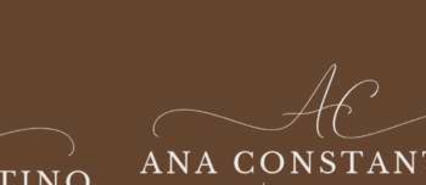

01
01Limpeza de pele
Higienização profunda e cuidado com a pele, com etapas definidas conforme avaliação.
InvestimentoR$ 160
Consultar horários ↗

SOBRE MIM
Esteticista e Cosmetóloga
Sou profissional da área da estética, com atuação voltada aos cuidados faciais e corporais, atendimento individualizado e orientação para uma rotina de cuidados que faça sentido para cada pele.
Acredito que um bom tratamento começa com escuta, avaliação e escolhas conscientes. Meu objetivo é unir conhecimento técnico, cuidado humanizado e orientação clara em cada etapa do atendimento.
Também atuo com tutoria acadêmica no curso de Estética e Cosmética, contribuindo para a formação de futuros profissionais.
Conheça os procedimentos ↘COMO POSSO TE AJUDAR
Cada atendimento é orientado pelas necessidades da sua pele e pelos objetivos definidos em consulta.
01Higienização profunda e cuidado com a pele, com etapas definidas conforme avaliação.
 02
02Renovação cutânea com indicação e escolha do protocolo após avaliação profissional.
 03
03Procedimento realizado após avaliação de indicação, condições da pele e cuidados necessários.
 04
04Manobras manuais adaptadas à região tratada e às necessidades de cada pessoa.
 05
05Cuidados cosméticos que buscam favorecer hidratação, viço e conforto cutâneo.
A indicação dos procedimentos depende de avaliação individual. Os valores informados são os valores apresentados para cada serviço.

UM DIFERENCIAL DO MEU ATENDIMENTO
Após a consulta, você recebe uma orientação de Home Care personalizada, já inclusa no valor do atendimento. Você terá acesso a um link exclusivo com produtos indicados para a sua rotina, priorizando opções acessíveis encontradas em farmácias populares.
O Home Care é personalizado para cada paciente e faz parte da orientação após a consulta. Os produtos podem variar de acordo com a avaliação.
Quero agendar minha consulta ↗CONTATO E LOCALIZAÇÃO
Entre em contato para agendar sua consulta ou tirar dúvidas sobre os procedimentos.